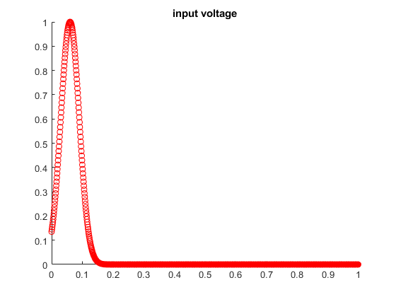
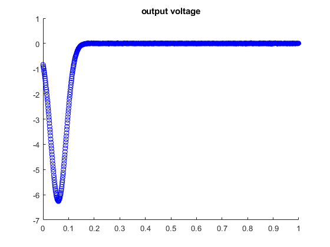
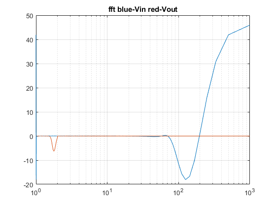
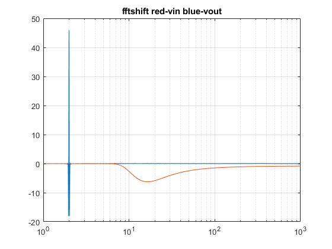

clear all
close all
R1 = 1;
C = 0.25;
R2 = 2;
L = 0.2;
R3 = 10;
a = 100;
R4 = 0.1;
Ro = 1000;
Cn = 0.00001;
Y1 = 1/R1;
Y2 = 1/R2;
Y3 = 1/R3;
Y4 = 1/R4;
G = [-1/R1 1/R1 0 0 0 1 0 0;
1/R1 (-1/R1)-(1/R2) 0 0 0 0 -1 0;
0 0 -1/R3 0 0 0 1 0;
0 0 0 -1/R4 1/R4 0 0 1;
0 0 0 1/R4 (-1/R4)-(1/Ro) 0 0 0;
1 0 0 0 0 0 0 0;
0 1 -1 0 0 0 0 0;
0 0 a/R3 1 0 0 0 0]
Cm = [-C C 0 0 0 0 0 0;
C -C 0 0 0 0 0 0;
0 0 -Cn 0 0 0 0 0;
0 0 0 0 0 0 0 0;
0 0 0 0 0 0 0 0;
0 0 0 0 0 0 0 0;
0 0 0 0 0 0 -L 0;
0 0 0 0 0 0 0 0]
n = 0;
tstep = 0.001;
time =0;
for m = 1:1000
n = n + 1;
In = randn*0.001;
Vin = exp(-(time-0.06).^2/(2*(0.03)^2));
F = [0 0 In 0 0 Vin 0 0];
V = G\F';
V3(n) = V(3);
Vo(n) = V(5);
figure(10);
hold on
scatter(time,Vin,'r')
title('input voltage')
figure(11)
hold on
scatter(time,V(5),'b')
title('output voltage')
time = tstep*n;
end
freq = 1./(tstep:tstep:time);
Xin = fft(V3);
Xout = fftshift(Vo);
figure(12)
semilogx(freq,Xin,freq,Xout)
title('fft blue-Vin red-Vout')
grid on
figure(13)
Xshiftin = fftshift(Xin);
Xshiftout = fftshift(Xout);
semilogx(freq,Xshiftin,freq,Xshiftout)
grid on
title('fftshift red-vin blue-vout')
G =
Columns 1 through 7
-1.0000 1.0000 0 0 0 1.0000 0
1.0000 -1.5000 0 0 0 0 -1.0000
0 0 -0.1000 0 0 0 1.0000
0 0 0 -10.0000 10.0000 0 0
0 0 0 10.0000 -10.0010 0 0
1.0000 0 0 0 0 0 0
0 1.0000 -1.0000 0 0 0 0
0 0 10.0000 1.0000 0 0 0
Column 8
0
0
0
1.0000
0
0
0
0
Cm =
Columns 1 through 7
-0.2500 0.2500 0 0 0 0 0
0.2500 -0.2500 0 0 0 0 0
0 0 -0.0000 0 0 0 0
0 0 0 0 0 0 0
0 0 0 0 0 0 0
0 0 0 0 0 0 0
0 0 0 0 0 0 -0.2000
0 0 0 0 0 0 0
Column 8
0
0
0
0
0
0
0
0
Warning: Imaginary parts of complex X and/or Y arguments ignored
Warning: Imaginary parts of complex X and/or Y arguments ignored
   